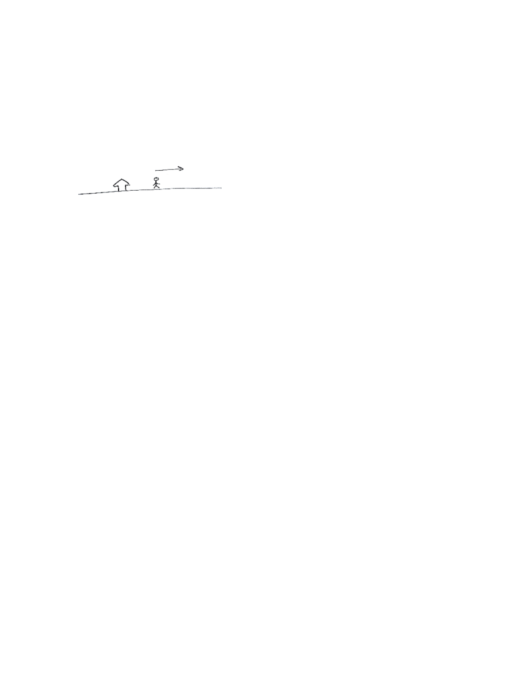
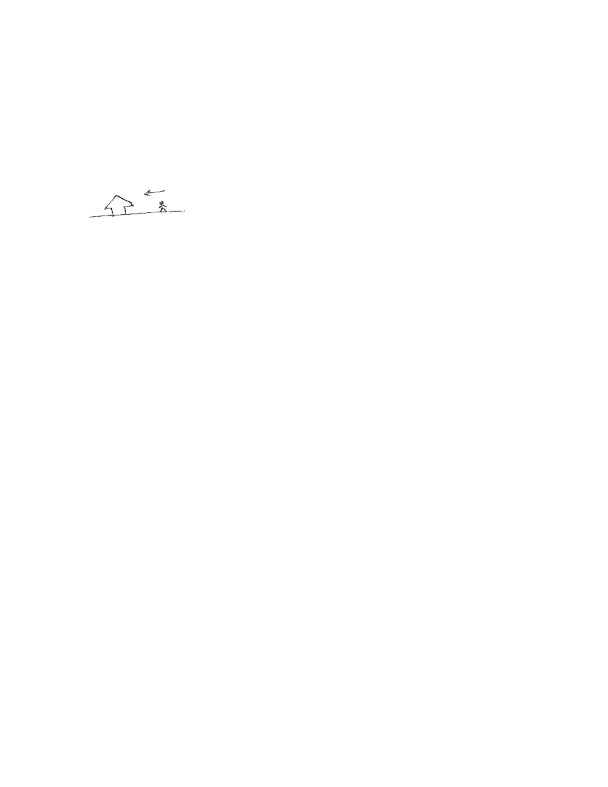
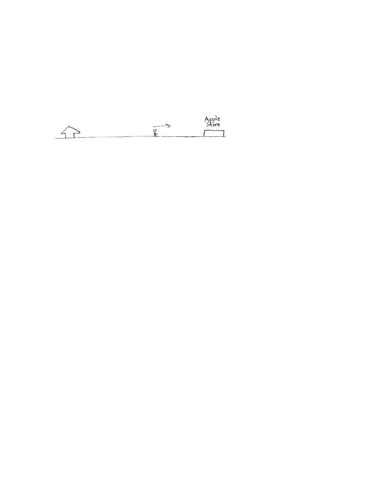
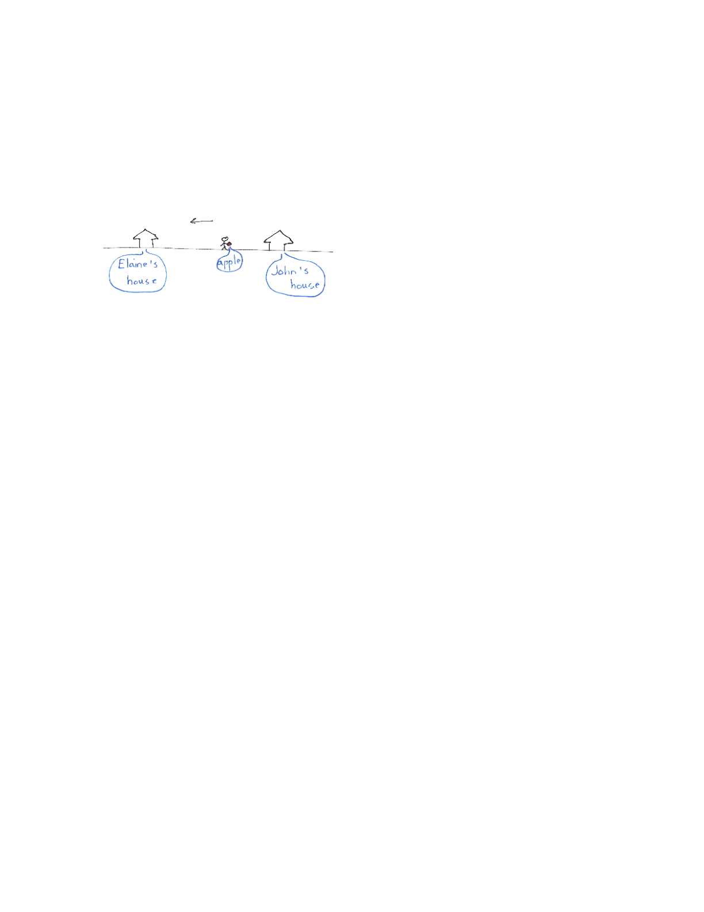

- (a)
- Describe the motion of John as precisely as you can. Let us assume that \(f(t)\) gives the position of John from his house at time \(t\). If \(f(t) < 0\), then John is west of his house; if \(f(t) > 0\), then John is east of his house; if \(f(t)=0\), then John is in front of his house.
For the first hour, that is for \(0 \leq t \leq 1\) John walks east away from his house.

For the second hour, that is, for \(1 \leq t \leq 2\), John turns around and starts walking back west. However, he does not walk all the way back to his house.

For the third hour, that is, for \(2\le t\le 3\), John realizes he needs to pick up an apple from the store, which is way east of his house, for Elaine. So he turns around again and walks east to the store.

For the fourth hour, that is, for \(t \ge 3\), John needs to drop the apple off at Elaine’s house, which is west of his house. He turns west and walks past his house until he makes it to Elaine’s house.

- (b)
- When is John’s velocity zero? What is happening to John at those times?
- (c)
- When is John moving in the positive direction? When is John the furthest in the positive direction and the furthest in the negative direction?
- (d)
- When is John’s velocity increasing? And when is it decreasing? When is John
going at maximum velocity? John’s velocity is increasing on the time intervals \((0,0.3),(1.5,2.5)\). John’s velocity is decreasing on the time intervals \((0.3, 1.5),(2.5,3.5)\). John is moving the fastest at time \(t = 3.5\), but that maximizes his speed, not his velocity, because he is moving in the negative direction at that time. It appears that he maximizes his velocity at about \(t=2.5\).